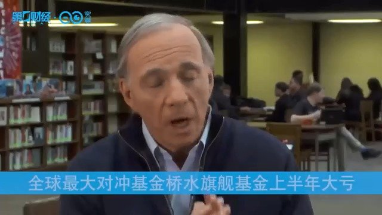

去年跑赢20%不说了？谁能每个时间段都跑赢指数，上帝？
@新浪证券:
【遭遇滑铁卢！全球最大对冲基金桥水旗舰基金上半年大亏】据英国《金融时报》，全球最大对冲基金桥水旗下旗舰基金Pure Alpha上半年亏损4.9%，创下20年来最差表现之一。对冲基金研究公司（HFR）数据显示，上半年宏观对冲基金平均上涨5.2%。不过，接近桥水人士称，Pure Alpha已经收复了部分亏损，截至7月中旬仅下跌1.45%。上半年，标普500指数涨幅超17%，富时环球股票指数上涨15%，全球债券市场指数上涨6%。桥水基金管理的资产高达1600亿美元，去年在对冲基金业绩普遍不佳的情况下，Pure Alpha基金逆市大赚14.6%。遭遇滑铁卢！全球最大对冲基金桥水旗舰基金上半年大亏。  新浪证券的微博视频
新浪证券的微博视频

23万次播放
01:43